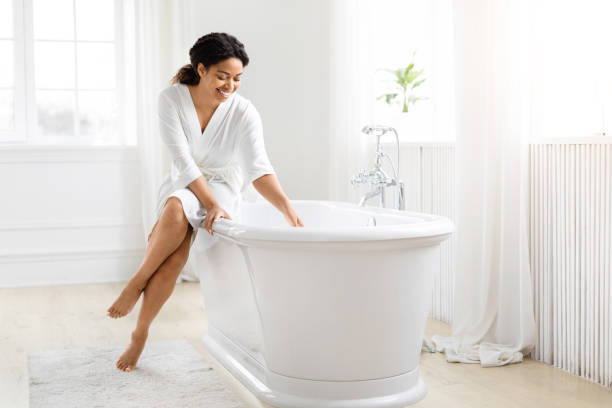

Edgewood Ohio
info@freedomwalkintubs.pro
Edgewood Ohio
info@freedomwalkintubs.pro

Upgrade to a safer bathroom today! Our walk-in tubs in Edgewood Ohio prioritize accessibility, durability, and luxury. Perfect for seniors or anyone seeking spa-like relaxation at home.
Click Here To Call Us (877) 848-1711Enhance your bathing experience with premium walk-in tubs in Edgewood Ohio . Designed for safety, accessibility, and relaxation, our walk-in tubs are perfect for individuals seeking a safer alternative to traditional bathtubs. Whether you’re dealing with limited mobility or simply want a luxurious bathing option, our products provide unmatched convenience and peace of mind.
Our walk-in tubs feature easy-entry doors, slip-resistant surfaces, and built-in seating to prioritize your safety and comfort. Equipped with therapeutic options like hydrotherapy jets and temperature control, these tubs not only ensure relaxation but also help alleviate stress, aches, and joint pain. Perfect for aging-in-place solutions, our walk-in tubs make independent bathing possible while adding value to your home.
At Walk In Tubs, we pride ourselves on offering top-quality walk-in tubs tailored to the unique needs of our customers in Edgewood Ohio . Our team of experts handles everything from consultation to installation, ensuring a seamless process and superior results. With a range of designs and customizations available, you’re sure to find a solution that fits your style and budget.
Transform your bathroom into a safe, spa-like retreat. Contact us today to learn more about our walk-in tubs and how they can improve your lifestyle in Edgewood Ohio . Your comfort, safety, and satisfaction are our top priorities.
Residential & commercial Walk In Tubs
Quality services at affordable prices
Immediate 24/ 7 emergency services


When it comes to choosing the perfect walk-in tub for your Edgewood Ohio home, there are various styles and designs that combine luxury, safety, and comfort. At Walk In Tubs, we offer an extensive range of walk-in tubs, each tailored to meet the unique needs of residents in Edgewood Ohio .
One popular option is the traditional walk-in tub, offering easy access with a low step-in threshold, making it ideal for seniors or individuals with mobility challenges. These tubs come with optional hydrotherapy jets for a relaxing spa experience, perfect for unwinding after a long day.
For homeowners looking for something more contemporary, the modern walk-in tub features sleek lines, integrated seating, and high-tech features such as touch-screen controls and LED lighting. These tubs not only provide safety but also serve as an elegant addition to any bathroom, enhancing the aesthetic of your Edgewood Ohio home.
If you have a smaller bathroom, consider the compact walk-in tub, designed to fit snugly in tight spaces while still offering all the benefits of a full-sized tub. These tubs provide comfort and convenience without compromising on safety.
Choosing the right style and design for your walk-in tub is essential for ensuring a luxurious, functional addition to your Edgewood Ohio home. Whether you're looking for advanced features or a simple, classic design, we have a solution to fit your needs and budget.
Residential & commercial Walk In Tubs
Quality services at affordable prices
Immediate 24/ 7 emergency services
Elevate the aesthetic of your bathroom with our custom tile surrounds for walk-in tubs, designed to fit any style preference. Our team specializes in creating stunning tile designs that complement your new walk-in tub, offering a luxurious finish that will make your bathing space a focal point in your home.
Tile surrounds provide not only a beautiful design element but also enhance the functionality of your bathroom. They are easy to clean, durable, and can be customized in numerous colors and patterns to match your taste.
By choosing our services you gain access to skilled craftsmanship combined with quality materials. Our installation experts will work with you throughout the design process to ensure a perfect fit for your walk-in tub, creating an inviting and stylish bathing environment.

Safety is our top priority, and Safe Step walk-in tubs are designed with innovative safety features to prevent slips and falls during bath time. With low thresholds and built-in grab bars, these tubs provide easy entry and exit, ensuring peace of mind for both users and their families.
, we focus on creating a safe bathing environment for everyone. Our Safe Step walk-in tubs come with slip-resistant surfaces and adjustable seating options that make bathing safe and enjoyable, supporting your independence.
By choosing our services, you can trust in our commitment to delivering safety and quality. Our specialists conduct thorough assessments of your needs and facilitate a seamless tub installation process, offering ongoing support and maintenance that guarantees your safety for years to come.

Walk-in tubs are not just a luxury; they provide numerous therapeutic benefits that enhance physical and mental well-being. The soothing jets and warm water promote relaxation and alleviate muscle tension while providing a safe bathing experience. Our therapeutic walk-in tubs are designed to engage both the body and mind, offering relief from everyday stresses and physical discomforts. At Walk In Tubs, we emphasize the wellness benefits that come with our walk-in tubs . Our expert staff will help you understand how these tubs can transform your bathing routine into a rejuvenating experience. By choosing us, you are investing in a healthier, happier lifestyle.

Investing in a walk-in tub is a significant decision, and we believe that access to safety and comfort should be available to everyone. That’s why we offer flexible walk-in tub financing options designed to fit various budgets . We understand that financial concerns can be a barrier, but we are committed to working with you to find a solution.
Our financing plans come with competitive rates and terms that make the purchase of a walk-in tub affordable and manageable. We believe that everyone deserves the opportunity to enhance their bathing experience with a safer and more comfortable solution.
Choosing us for your walk-in tub needs means you’re partnering with a company that cares about your financial well-being. Our knowledgeable team will walk you through the available financing options, helping you select a plan that aligns with your budget without compromising on quality.

Quality doesn’t have to come at a premium. Our affordable walk-in tub solutions in Edgewood Ohio provide safe, comfortable bathing options without breaking the bank. We are committed to delivering high-quality products and exceptional service at prices that fit within your budget. Our goal is to ensure that everyone can experience the benefits of a walk-in tub.
When you choose our affordable walk-in tub solutions, you can rest assured that you’re not sacrificing quality for cost. Our skilled installation team ensures that every detail is managed with care, providing you with a product that enhances your home’s safety and comfort. Discover the convenience of affordable walk-in tubs designed with you in mind.
Regular maintenance and timely repairs are essential for keeping your walk-in tub in optimal condition, ensuring safety and longevity. Our professional team at Walk In Tubs offers comprehensive maintenance and repair services ensuring your walk-in tub continues to perform at its best. We understand the intricacies of walk-in tub systems, and our commitment to customer service guarantees quick responses and high-quality workmanship. By choosing us, you are assured of professional service and care, allowing you to enjoy your walk-in tub without any worries.

Living with chronic pain can be challenging, and a walk-in tub can be an essential tool in managing discomfort. Our specially designed walk-in tubs facilitate an easy entry and exit, making soaking and hydrotherapy accessible. The warm water promotes relaxation while soothing sore muscles and joints. At Walk In Tubs we are dedicated to helping you regain control over your pain management using our expertly designed tubs. Our team will work closely with you to understand your specific needs, ensuring the safest and most comfortable bathing solutions. Choosing us means prioritizing your health and comfort using our tailored therapeutic options.

Aging in place is a preferred choice for many seniors who desire to remain in the comfort of their own homes as they age. Our walk-in tubs provide essential features that facilitate aging in place, promoting safety, accessibility, and comfort. With options such as low-entry thresholds, grab bars, and non-slip surfaces, our tubs are designed specifically for the unique safety and care needs of seniors. At Walk In Tubs, we are proud to serve the Edgewood Ohio community with products that support an independent lifestyle for aging adults. By choosing us, you gain access to expert advice, quality products, and a commitment to enhancing your bathing experience while ensuring safety and independence.
Years Experience
Expert Technicians
Satisfied Clients
Compleate Projects
At Freedom Walk-In Tubs, we understand the importance of safety, comfort, and independence, which is why we proudly offer top-of-the-line walk-in tubs designed to transform your bathroom experience. Serving Edgewood Ohio and surrounding areas, our tubs are engineered to provide peace of mind and a sense of freedom to individuals with mobility challenges or those seeking a luxurious, therapeutic bathing experience.
Our walk-in tubs are built with high-quality materials and advanced features, ensuring durability and safety. Equipped with slip-resistant floors, low-threshold entryways, and easy-to-use controls, our tubs allow for hassle-free access, reducing the risk of slips or falls. Plus, with built-in hydrotherapy jets, air massagers, and heated surfaces, every bath becomes a rejuvenating escape from the stresses of the day.
What sets Freedom Walk-In Tubs apart is our commitment to delivering a personalized experience. We work closely with our customers to understand their unique needs, ensuring the perfect fit for their bathroom space and requirements. Our installation team is highly trained, ensuring each tub is installed with precision and care, providing you with years of reliable service.
We are proud to serve Edgewood Ohio and the nearby communities, helping people regain their independence while enhancing their daily bathing routines. If you're looking for a safe, comfortable, and enjoyable bath experience, trust Freedom Walk-In Tubs to deliver exceptional results.
Choose us for quality, care, and the best in walk-in tub solutions across Edgewood Ohio .
In today's fast-paced world, self-care and relaxation have become paramount. This is where luxury walk-in tubs come into play, redefining the bathing experience. Our luxury walk-in tubs not only provide unmatched comfort but also add a touch of elegance to your bathroom. Each unit is designed with high-end materials and advanced features that guarantee a luxurious soak every time. With powerful jets for hydrotherapy, ergonomic seating, and customizable options like mood lighting and aromatherapy, our luxury walk-in tubs cater to your unique needs and desires.
Choosing us means opting for superior craftsmanship and trendy designs that make a statement. Our team understands the importance of aesthetics and functionality, ensuring that our luxury walk-in tubs not only fit your space but elevate it. With years of experience in the industry, we provide personalized consultations to find the best unit for your taste and requirements. With a proven track record of satisfied customers we pride ourselves on providing high-quality products that blend safety and luxury perfectly.
Hydrotherapy has been recognized for its therapeutic benefits, including pain relief and improved circulation. Our hydrotherapy walk-in tubs are designed with state-of-the-art jet technology that harness the power of water to provide a soothing and rejuvenating bathing experience. They stimulate muscle relaxation, relieve joint pain, and promote overall well-being. At Walk In Tubs, we understand the importance of stress relief and physical health and offer tailored solutions in Edgewood Ohio that fit your lifestyle. Each tub is designed with safety and ease of use in mind, ensuring that you can enjoy the therapeutic benefits without worry. Our dedicated team is here to help you choose the perfect hydrotherapy walk-in tub for your home, and we pride ourselves on our exceptional customer service and craftsmanship.
Designing bathrooms with limited space can pose a real challenge. Our compact walk-in tubs are the perfect solution, combining functionality with design to ensure that even small spaces can be transformed into luxurious retreats. These specially designed tubs maximize every inch while offering the safety features and comfort you've come to expect from our products.
, we understand the intricacies of small bathroom design. Our compact walk-in tubs come with features such as built-in seating, grab bars for added safety, and a range of customizable options. You don’t have to sacrifice comfort for size; our tubs are designed to offer a full bathing experience even in the smallest of areas, promoting independence while ensuring a safe bathing experience for all.
Why trust us for your compact walk-in tub needs? With years of experience installed in homes throughout Edgewood Ohio we focus on your needs first. Our expert team is dedicated to providing tailored solutions that fit within your layout and budget. From installation to maintenance, our customer support is always just a call away.
Accessibility is vital to promoting independence and a sense of dignity for individuals with mobility challenges. Our wheelchair-accessible walk-in tubs are designed to ensure safe and easy access for those with physical limitations. With features such as wider doors, low thresholds, and built-in grab bars, these tubs provide a safe bathing environment without sacrificing comfort. At Walk In Tubs, we understand the importance of mobility and accessibility and strive to offer the best solutions in Edgewood Ohio . Our team is dedicated to working with you to design and install a walk-in tub that suits your personal needs and preferences. By choosing us, you ensure that you are getting a product that complies with safety regulations and is installed by experts who care.
Elevate your bathing experience with our walk-in tubs equipped with air jet therapy. These innovative tubs offer a soothing bubble therapeutic experience that massages sore muscles and relieves tension. The gentle yet powerful air jets promote circulation and overall relaxation, making it the perfect addition to your self-care routine.
In Edgewood Ohio our air jet therapy walk-in tubs are designed to address your unique needs. We help you customize your experience with adjustable air pressures and unique jet placements tailored to specific areas of concern. With the click of a button, you can transform your bathroom into a spa-like sanctuary.
We pride ourselves on our reputation for exceptional products and customer service. When you choose us, you are assured of our commitment to quality and meticulous attention to detail, from installation to follow-up maintenance. Our customers enjoy not only the features of their air jet therapy tubs but also the peace of mind that comes with knowing they are supported by a dedicated team of professionals.
For a truly relaxing bathing experience, our walk-in tubs with heated seats offer unparalleled comfort. The heated seats provide a soothing warmth that enhances relaxation, making your time spent in the tub not just a necessity but an indulgence. Perfect for those chilly days or simply for added enjoyment, our tubs are designed to keep you warm and cozy.
When you choose our heated seat walk-in tubs, you’re embracing a new level of comfort. Our professional team ensures that each installation is flawless, working with your existing bathroom layout to create a seamless addition. Our tubs also incorporate other safety features and customizable options to fit your personal preferences. Experience the luxury of warmth and safety every time you bathe—choose us for your walk-in tub needs .
A dual-drain system in walk-in tubs ensures rapid drainage, enhancing safety for users by minimizing the waiting time to exit the tub after a bath. This feature is particularly beneficial for seniors and individuals with mobility challenges, providing peace of mind during and after the bathing experience. Our experts at Walk In Tubs design walk-in tubs with dual-drain systems specifically for those who prioritize safety and efficiency. We pride ourselves on our commitment to providing accessible and innovative solutions for our clients. When you choose us, you’re choosing a company that values quality and safety above all else, ensuring your installation meets all your needs.
A commitment to inclusivity is at the core of our bariatric walk-in tubs, designed to accommodate users of all shapes and sizes. The robust structure and spacious interiors provide confidence and comfort for individuals with higher weight capacities, ensuring everyone can enjoy the luxury of a safe bathing experience.
Our bariatric walk-in tubs are crafted with high-quality materials that guarantee strength and safety without compromising on aesthetics. we offer customized options to meet your specific needs, including wider openings, reinforced seating, and enhanced safety features that help foster independence.
Choosing us means choosing a company that values every customer. Our knowledge and understanding of unique requirements allow us to provide tailored solutions while ensuring the highest safety standards are met. Our expert installation teams ensure that your tub is set up correctly to maximize your bathing experience.
Sometimes, the simplest pleasures are the most fulfilling, such as soaking in a warm, relaxing bath. Our soaking walk-in tubs are designed to provide deep, comfortable soaking experiences, ideal for stress relief and muscle relaxation. They offer spacious designs that allow for a soothing soak, making them perfect for anyone seeking tranquility at home. At Walk In Tubs, we focus on creating a warm atmosphere where you can unwind from the hectic pace of life. Our professional team ensures that your soaking tub is installed to perfection, taking into consideration your personal preferences and space requirements. When you choose us, you are investing in quality craftsmanship and understanding the essence of relaxation.
Enjoy the luxury of companionship in your bathing experience with our two-person walk-in tubs. Perfect for couples or caregivers, these tubs offer ample space for two while ensuring that safety and accessibility are never compromised.
Our two-person models feature dual-entry doors, robust safety features, spacious seating, and an easily operable design, allowing both users to comfortably enjoy their bath together. Whether you want to relax after a long day or share a soothing experience, our two-person walk-in tubs cater to your needs effortlessly .
When you choose us, you get a commitment to quality with expert craftsmanship and customer satisfaction at every step of the installation process. Our dedicated team is here to guide you through choosing the perfect model that meets your lifestyle and bathing needs.
Tailored solutions are our specialty at Walk In Tubs. Our custom walk-in tub installations ensure a perfect fit for your bathroom, enhancing both aesthetics and functionality. No two bathrooms are the same, and our expert team works closely with you to create a customized solution that meets your specific needs.
We provide a wide variety of options regarding design, features, and materials, ensuring your walk-in tub reflects your personal style and meets safety standards. Our customized installations not only improve safety but also elevate the overall look of your bathroom, making it a relaxing oasis.
With our commitment to excellence, we take pride in providing thorough consultations and high-quality installations in Edgewood Ohio . Trust us to guide you through every stage of this process, from initial design to final installation, ensuring your complete satisfaction.
Making the transition from a traditional bathtub to a walk-in tub is easier than you might think. Our bathtub-to-walk-in tub conversions are an affordable and practical solution for those seeking enhanced safety and improved accessibility.
, our team is highly skilled in transforming your existing bathroom setup into a safe and comfortable space. We offer different styles and safety options, ensuring that the new walk-in design matches your personal taste while being functional and elegant.
Why choose us? With our team's extensive experience and dedication, we make the entire conversion process hassle-free. Our commitment to ensuring customer satisfaction is paramount, and we perform thorough assessments to determine the best conversion options for your space and budget.
As our loved ones age, safety and comfort become crucial elements in daily life. Our walk-in tubs specifically designed for seniors offer a safe, relaxing bathing experience that reduces the risk of slips and falls—common concerns among the elderly.
Equipped with features like low entry thresholds, grab bars, and slip-resistant surfaces, our walk-in tubs provide seniors with the autonomy to bath independently without sacrificing safety. Hydrotherapy options can also provide soothing relief for aching muscles and joints, making bath time a therapeutic experience.
By choosing us you are making a conscious decision to enhance the safety and comfort of your loved ones. Our dedication to quality craftsmanship and customer support ensures that you receive the best possible solutions tailored to seniors’ needs.
Offering versatility in your bathroom, walk-in tubs with shower combos provide the ultimate convenience. With these installations, you get the benefits of both a relaxing soak and a refreshing shower, all in one unit. This is particularly advantageous for those who may want the option to choose their bathing style. At Walk In Tubs, we specialize in creating functional and stylish walk-in tub and shower combos that fit perfectly in your space in Edgewood Ohio . Our team of experts is dedicated to ensuring that you receive a product that meets your needs while enhancing the overall look of your bathroom. When you choose us, you’re assured of innovative solutions that combine function with design.
Sustainability is essential, which is why our eco-friendly walk-in tubs are made from environmentally conscious materials and designed to conserve water. Enjoy guilt-free relaxation while being kind to the planet, without sacrificing luxury or performance.
, our eco-friendly walk-in tubs incorporate energy-efficient technologies that promote water conservation. These tubs thrive on functionality, ensuring that you not only enjoy your time inside but also take pride in your contribution to environmental sustainability.
Choosing us means committing to a greener future. We provide flexible installation options to help you make an eco-friendly choice that enhances your lifestyle without compromising on comfort or style.
For places where safety and accessibility are paramount, especially in public facilities and homes of seniors or individuals with disabilities, ADA-compliant walk-in tubs are essential. These tubs are designed with specific features such as grab bars, low thresholds, and adjustable spray fixtures that comply with the Americans with Disabilities Act. At Walk In Tubs, our team is dedicated to providing safe bathing solutions that uphold the highest standards of accessibility. We ensure you receive a product that meets your needs and complies with relevant regulations, providing peace of mind for you and your loved ones. When you choose us, you’re making a commitment to safety and dignity for all.
For homeowners in need of quick, effective solutions, our fast-install walk-in tubs provide a convenient answer without sacrificing quality. Designed for easy and efficient installation, these tubs allow you to transform your bathroom in no time, ensuring safety and accessibility with minimal disruption to your home.
Choosing our fast-install walk-in tubs means you won’t have to wait long for the comfort and security of a safe bathing environment. Our experienced installers will handle the process quickly and efficiently, allowing you to enjoy your new tub sooner. With our commitment to quality and customer care, you can trust us to deliver fast, reliable service that meets your needs.
Installing a walk-in tub in your home in Edgewood Ohio can provide numerous advantages, especially for individuals looking for enhanced safety, comfort, and accessibility. One of the top benefits is the improved safety it offers. Walk-in tubs are designed with low thresholds, making it easy for people with mobility challenges to enter and exit the tub without the risk of slipping or falling. This makes them a great choice for seniors or individuals with disabilities.
In addition to safety, walk-in tubs provide therapeutic benefits. Many models come with built-in hydrotherapy features, such as jets that provide soothing massages, improving circulation and relieving sore muscles. This can be particularly helpful for those suffering from arthritis, muscle pain, or stress, offering an affordable alternative to expensive spa treatments.
Walk-in tubs also enhance independence. For those who may have difficulty using traditional bathtubs or showers, a walk-in tub allows for an enjoyable and easy bathing experience, reducing the need for assistance from caregivers.
Another benefit is the increased home value. Installing a walk-in tub can make your home more appealing to a broader range of buyers, especially those seeking homes with accessibility features. This could lead to a higher resale value in the future.
Investing in a walk-in tub in Edgewood Ohio not only promotes safety and comfort but also provides long-term value for your home.
Edgewood is a census-designated place (CDP) in Ashtabula County, Ohio, United States. The population was 4,185 at the 2020 census.
Most walk-in tubs are designed to fit standard bathtub spaces. Freedom Walk In Tubs can assess your bathroom and provide recommendations.
Freedom Walk In Tubs offers a wide range of walk-in tubs, including soaker tubs, hydrotherapy tubs, and bariatric tubs, .
Yes, Freedom Walk In Tubs offers models with quick-drain systems for added convenience in Edgewood Ohio .
Yes, hydrotherapy features in walk-in tubs can alleviate arthritis pain and improve joint mobility for residents in Edgewood Ohio .
Yes, modern walk-in tubs from Freedom Walk In Tubs are energy-efficient and designed to minimize utility costs .
Standard walk-in tubs vary in size, but Freedom Walk In Tubs can provide options that suit your bathroom in Edgewood Ohio .
Yes, walk-in tubs are versatile and can be enjoyed by people of all ages .
Yes, walk-in tubs are equipped with safety features to minimize fall risks, making them ideal for residents .
Yes, Freedom Walk In Tubs offers walk-in tubs with hydrotherapy features to improve your bathing experience .
Professional installation is recommended to ensure safety and functionality. Freedom Walk In Tubs provides expert installation .
Yes, Freedom Walk In Tubs offers warranties to ensure peace of mind and protect your investment .
Absolutely! Freedom Walk In Tubs provides a variety of customization options to match your preferences and needs .
The process involves removing your old tub, making any necessary adjustments, and installing the walk-in tub. Freedom Walk In Tubs ensures a seamless process .
Installation typically takes one to two days, depending on your bathroom setup. Freedom Walk In Tubs ensures quick and professional service .
Walk-in tubs provide safety, comfort, and therapeutic benefits, especially for seniors or individuals with mobility challenges. Freedom Walk In Tubs offers high-quality solutions to enhance your bathing experience in Edgewood Ohio .
Contact Freedom Walk In Tubs today to schedule a free in-home consultation .
The cost varies based on the features and installation requirements. Contact Freedom Walk In Tubs for a free estimate tailored to your needs .
Yes, Freedom Walk In Tubs offers compact designs that fit perfectly in small bathrooms across Edgewood Ohio .
Yes, walk-in tubs are designed with safety features like grab bars, non-slip surfaces, and low thresholds, making them ideal for seniors .
Cleaning is simple with non-abrasive cleaners and regular maintenance. Freedom Walk In Tubs provides guidance for proper care in Edgewood Ohio .
Freedom Walk In Tubs provides expert consultations to help you choose the perfect walk-in tub for your needs .
Yes, Freedom Walk In Tubs frequently offers promotions to make walk-in tubs more affordable for customers .
Look for safety features, therapeutic jets, quick-drain systems, and comfortable seating. Freedom Walk In Tubs offers customized options.
Yes, walk-in tubs from Freedom Walk In Tubs are designed to meet ADA standards, ensuring accessibility .
Walk-in tubs are low-maintenance and built to last. Freedom Walk In Tubs offers durable products with easy cleaning options in Edgewood Ohio .
Yes, Freedom Walk In Tubs provides flexible financing options to make your walk-in tub installation affordable .
Yes, Freedom Walk In Tubs specializes in bathtub-to-walk-in tub conversions for homeowners .
Walk-in tubs provide hydrotherapy, which can help relieve pain, improve circulation, and reduce stress for residents .
Walk-in tubs enhance safety, comfort, and property value, making them a great investment for homeowners .
Modern walk-in tubs are designed to be water-efficient without compromising functionality. Freedom Walk In Tubs offers eco-friendly options .
The walk-in tub from Freedom Walk In Tubs in Edgewood Ohio [State Abbreviation] has been a game-changer. It’s comfortable, safe, and easy to use. The installation team was punctual and courteous. I’m so happy with my purchase and can confidently recommend them to others.
Profession
Freedom Walk In Tubs in Edgewood Ohio [State Abbreviation] made upgrading my bathroom a breeze. The walk-in tub is everything I wanted—safe, comfortable, and easy to use. The installation was completed on time, and the team was professional. I’m extremely satisfied with the entire experience.
Profession
Freedom Walk In Tubs exceeded my expectations in Edgewood Ohio [State Abbreviation]. The installation process was quick and clean, and the tub is exactly what I needed. It’s safe, comfortable, and has added a new level of independence to my daily routine. Fantastic service!
Profession
Edgewood OH Walk In Tubs Pros
(877) 848-1711
info@freedomwalkintubs.pro
09.00 AM - 09.00 PM
09.00 AM - 12.00 PM